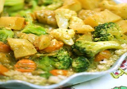

|  | It’s so stress-free and reasonable that it kinds me sensation why we ever paid change on prepared food. This dish can be prepared quicker than the delivery form, and since you’re creation it at home, you get to device the flavour. |
Ingredients: Coconut oil 1 teaspoon, chopped yellow onion ½, minced cloves garlic 2, Curry powder 1½ to 2 tablespoons, rinsed water 2 cups, coconut milk 1 (13.5 oz.) can, tamari 1 tablespoon (soy sauce optional), pure maple syrup 1 tablespoon, salt ½ teaspoon as per required, chopped sweet potato 1, chopped assorted vegetables 1 lb., quinoa 1 cup. Method: Begins with conglomerate the quinoa & water in slight pan over high Flam, and boil it. When boiling completed, shield the pot and decrease the heat to low, permitting the quinoa to heat for 15 mint while you effort on the curry cheek. In the period in-between, thaw the 3-quart saute coconut oil in a pan over average heat, and saute the garlic and onions until gentle for 5 mint, add in the curry powder, coconut milk, maple syrup, tamari and salt as required mix well, as per required add any other flavour and adjust it, then simmer it then add sweet potatoes chopped. Shield the pan leave for 5 mint to steam sweet potato, to finish, add all the vegetables, mix in the cheek to wool, then shield and permit to vapour until fork-tender. Fluff the broiled quinoa with a split, then serve with a plentiful slice of the vegetables and curry.
|
||||

Crispy Pizza
Crispy Pizza and Pressed Panini authentic recipe One of the very famous Street Italian food.
Golden Chicken
Crispy and curried Golden chicken recipe for cooking Golden Chicken ghastly.